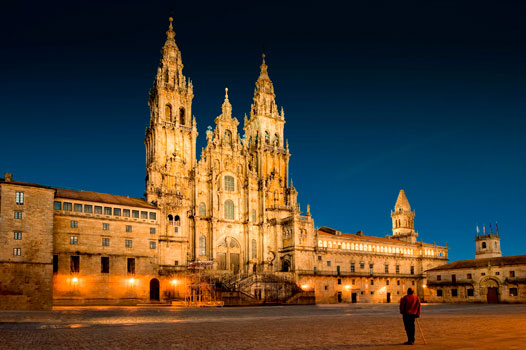
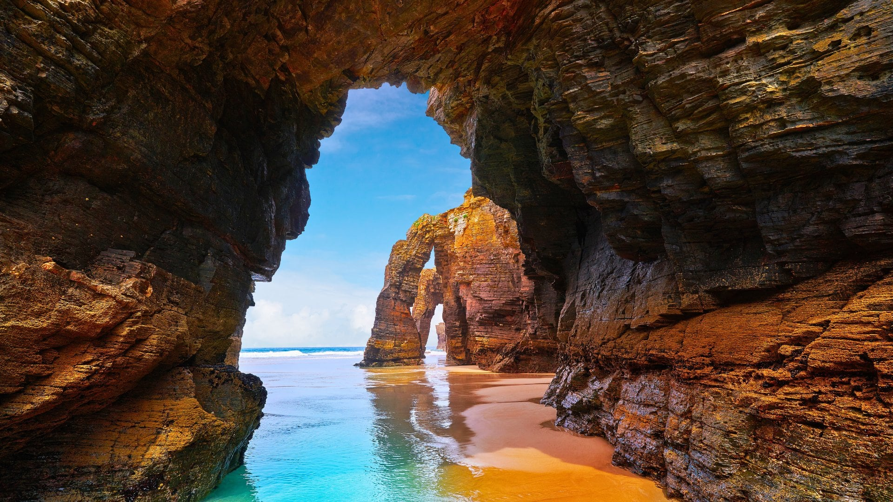
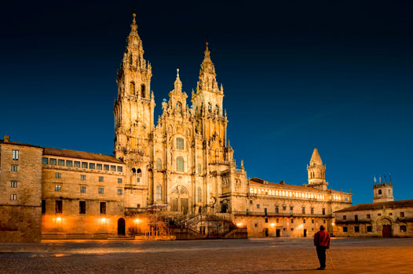
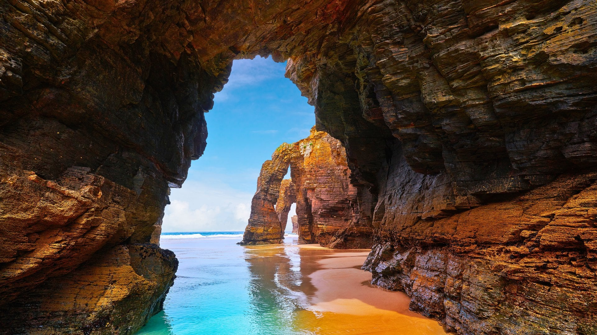
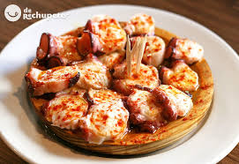
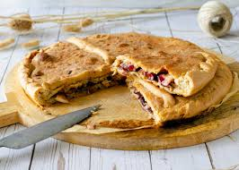
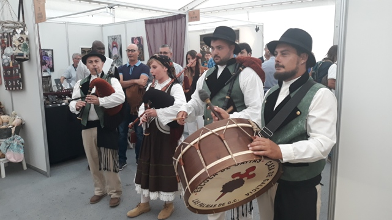
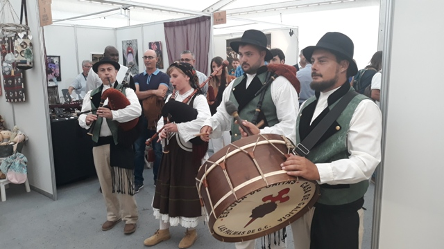
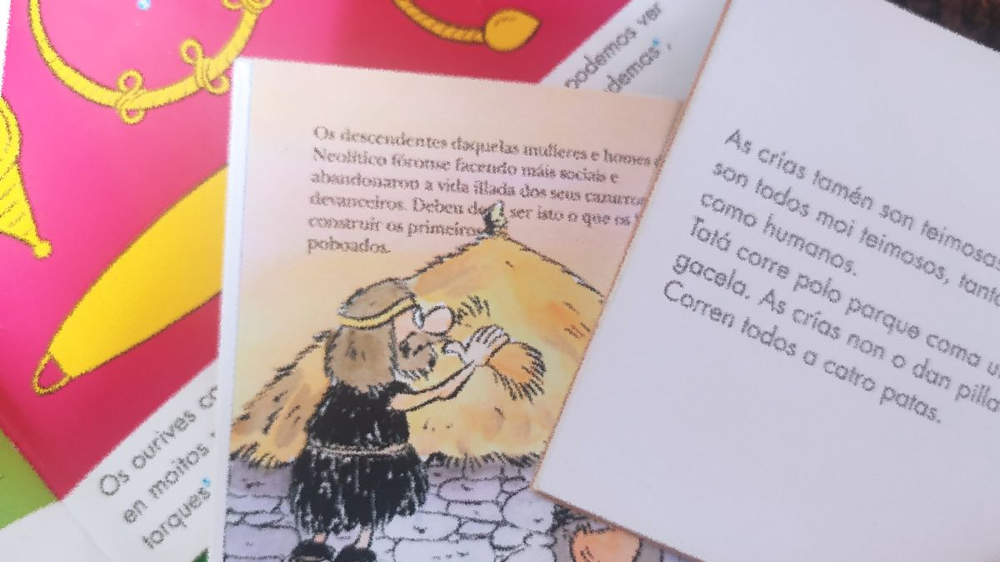

Galería de Imágenes
 





Lugares de Interés
Playa de las Catedrales
Una impresionante playa con formaciones rocosas únicas situada en la costa de Lugo.
Ubicación: Ribadeo, Lugo
Torre de Hércules
El faro romano más antiguo en funcionamiento, ubicado en la ciudad de A Coruña.
Ubicación: A Coruña
Plaza del Obradorio
Plaza principal y corazón de de la ciudad de Santiago de Compostela, ademas de ser un punto clave del Camino de Santiago.
Ubicación: Santiago de Compostela
Botafumeiro
Mide 1,50 metros de altura, pesa aproximadamente 53 kg, famoso por su impresionante tamaño y por la espectacular ceremonia en la que es utilizado.
Ubicación: Catedral de Santiago de Compostela
Mapa de la Población
Cultura Gallega
El pulpo a la gallega y la empanada son algunos de los platos más representativos de Galicia.
 Las fiestas tradicionales y la música celta son parte fundamental de la cultura gallega.
 

El gallego es la lengua cooficial junto al castellano, con una rica tradición literaria.
